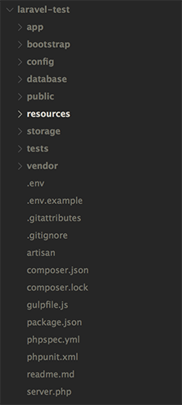
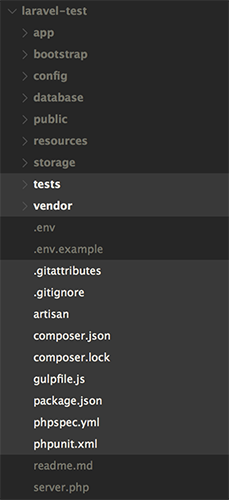

The Evolution and Impact of Tooling in the Modern Web
Nate Emerson
Lead Developer, Cloudcompli Inc.
@nateemerson
First, a poll
Ruby on Rails, Angular, SVN, Modernizr, PHPUnit, Sublime Text, jQuery, Github, WebBlocks, Grunt, Jenkins, Team Foundation Server, Slack, Ember.js, NPM, CodeClimate, Laravel, Google Docs, React.js, Selenium, Bower, Rake, JIRA, Carbon, Middleman, Bootstrap, Picturefill.js, Homebrew, SASS, Toggl, StyleCI
About Me
I make things...
for the web...
and I ♥ OSS!
About Me
Lead Developer

Formerly, Web Engineer


Tools for Developers
Any piece of software or process that aids in the development and management of a software project.
- Version Control (Git, SVN)
- Language-Specific Frameworks (RoR, Laravel, Bootstrap)
- Build Process Tools (Grunt, WebBlocks)
- Testing Aids (RSpec, PHPUnit, Selenium)
- Team Management/Communication Apps (Slack, Jira, Toggl)
- And more...
Three Classifications of Tools
-
Code-Based Tools
- Libraries, Components, and Frameworks
-
Code Process Tools
- Version Control, Build Tools, Testing Aids, and Editors
-
Process Management Tools
- Communication Apps, Issue Trackers, Resource Management Tools
Code-Based Tools
- Most obvious/visible to developers
- Huge productivity gains for common problems
- Can provide organization/development methodologies
Components
- Active Record
- Carbon
- Modernizr.js
Frameworks
- Zend Framework
- Ruby on Rails
- Bootstrap
Frameworks
In this sense, frameworks are the new programming languages. They are where the latest ideas, philosophies, and practicalities of modern-day coding are found. Some flame out, but many are becoming the new fundamental building blocks of programming.
- Peter Wayner
Case Study: Ruby on Rails
- Ruby v0.95 released in 1995
- Rails v1.0 released in 2005
Case Study: Ruby on Rails
- Popularity exploded due to ease of use
- Incredibly powerful for rapid prototype development
- Built in ORM, scaffolding functionality, and command line generators
Case Study: Ruby on Rails
Ruby on Rails is unquestionably Ruby's killer app. It can take a lot of credit for lifting Ruby from obscurity outside its native Japan. No other programming language can boast a simple web application framework that also has almost all of that languages developer mindshare.
- Lucas Carlson
Case Study: Javascript
Many features that are making their way into ES6 originated in OSS efforts.
- Dependency loading (require.js)
- ES6 Promises (promise.js, es6-promise)
- jQuery array functions
Code Process Tools
- Not the most obvious or popular tools to developers
- Massively powerful when utilized correctly
- Often encapsulate or enforce paradigms and best practices
Version Control
- CVS
- SVN
- Mercurial
- Git
Package/Dependency Managers
- NPM
- Homebrew
- Ruby Gems / Bundler
- Composer
- Bower
Build Process Tools
- Preprocessors (Handlebars, SASS, Coffeescript)
- Concatenators
- Linters / Style Checkers
- Task Runners (Grunt, Gulp, Rake, Artisan)
And Many More
- Code Quality Tools
- Continuous Integration
- Static Site Generators
- Editors
- Testing Tools
Case Study: Composer
- 1.0.0 alpha released in 2011
- Package / Dependency manager, inspired by NPM and Bundler
- Packagist - hosted package repository
- Includes autoloading generation for all managed components
Case Study: Composer
- Popularized highly specialized de-coupled components
- Triggered huge paradigm shift in framework development
- Ex: Laravel 5 - Illuminate components
Example: Laravel Illuminate
Of course, writing solid, de-coupled code bases is nothing new...However, it hasn't always been widely embraced in the PHP world, especially amongst micro-frameworks. That is changing. Wonderful new tools like Composer make building and consuming these components easier than ever...
Example: Laravel Illuminate
...For that reason, over the past month or so I have converted most of Laravel into stand-alone, PSR-0 / PSR-1 compliant components that may be used in any project. To distinguish the components from the Laravel framework itself, I have named them the "Illuminate" components.
- Taylor Otwell ("Illuminating the future. What’s next?" - 2012)
Example: Laravel Illuminate
Laravel, in additions to using its own custom packages like Eloquent and Blade, utilizes a whopping 23 packages from the wider PHP community. Using the "best of the best" PHP packages allows for greater interaction between Laravel and the wider PHP community.
- Taylor Otwell ("Unifying PHP" - 2014)
Example: Laravel

Example: Laravel

Process Management Tools
- Frequently disregarded or disliked by developers
- Especially valuable in teams
- Helps with management of a software project
Communication Tools
- Corporate Chat
- Video Conferencing
- Screensharing
Project Management
- Issue Tracking
- Project Management
- Resource Management
Case Study: Cloudcompli
- Began as a tool for a consulting firm with one developer
- Became the basis for a new tech company
- Transitioned from ad-hoc meetings, emails, and word documents to transparent, cloud-based discussions and issues
Case Study: Cloudcompli
- Slack for communication
- Google Hangouts for remote meetings
- GoToMeeting for remote presentations, training, and screen sharing
Case Study: Cloudcompli
- Github for issue tracking, code review, and documentation
- Toggl for resource management
- Google Drive for document sharing
Thank You
Any Questions?
Nate Emerson
@nateemerson